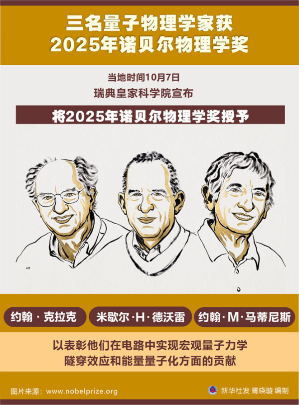
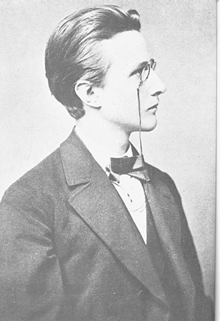
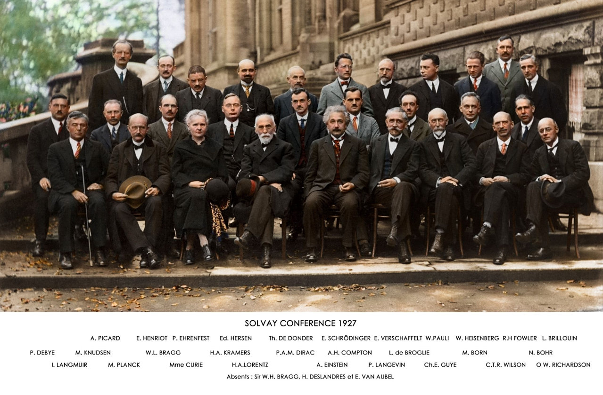
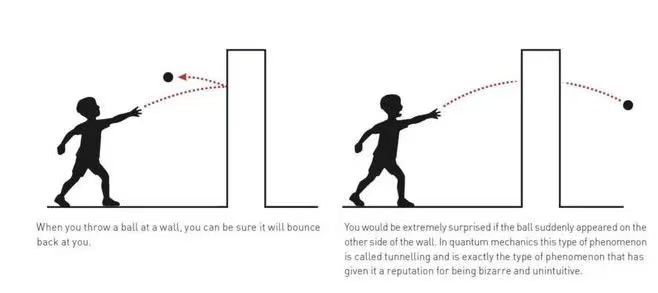
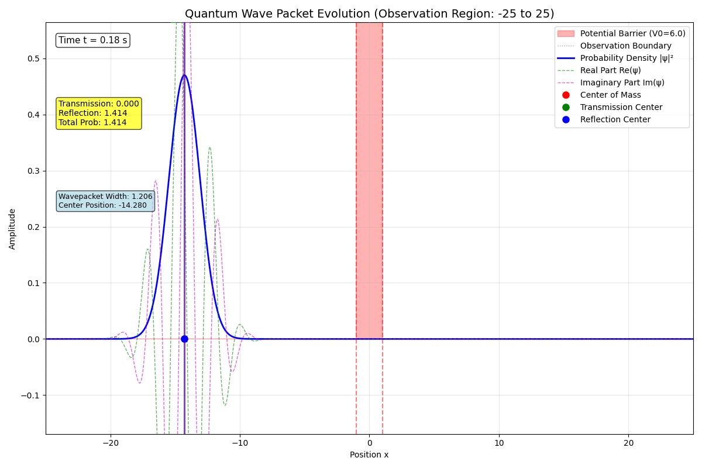
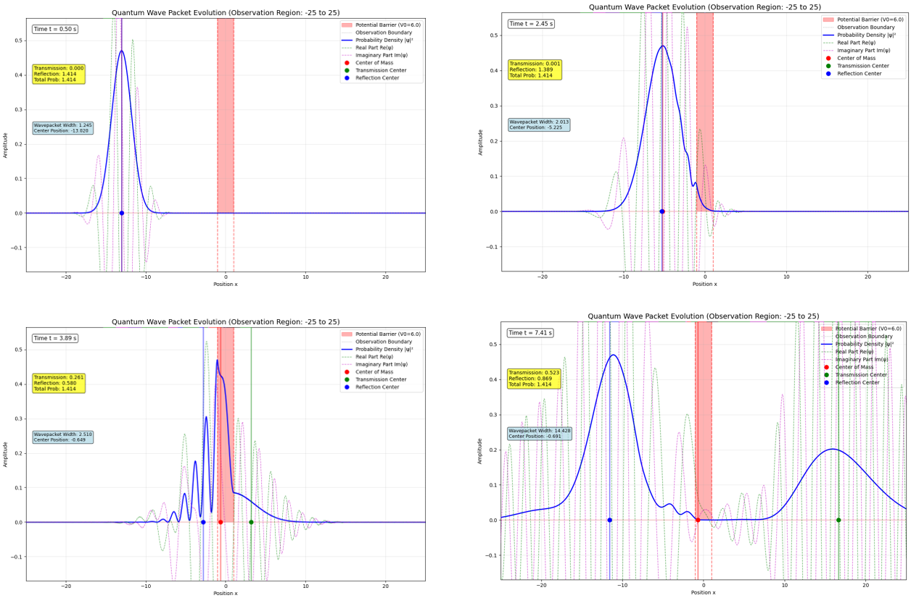
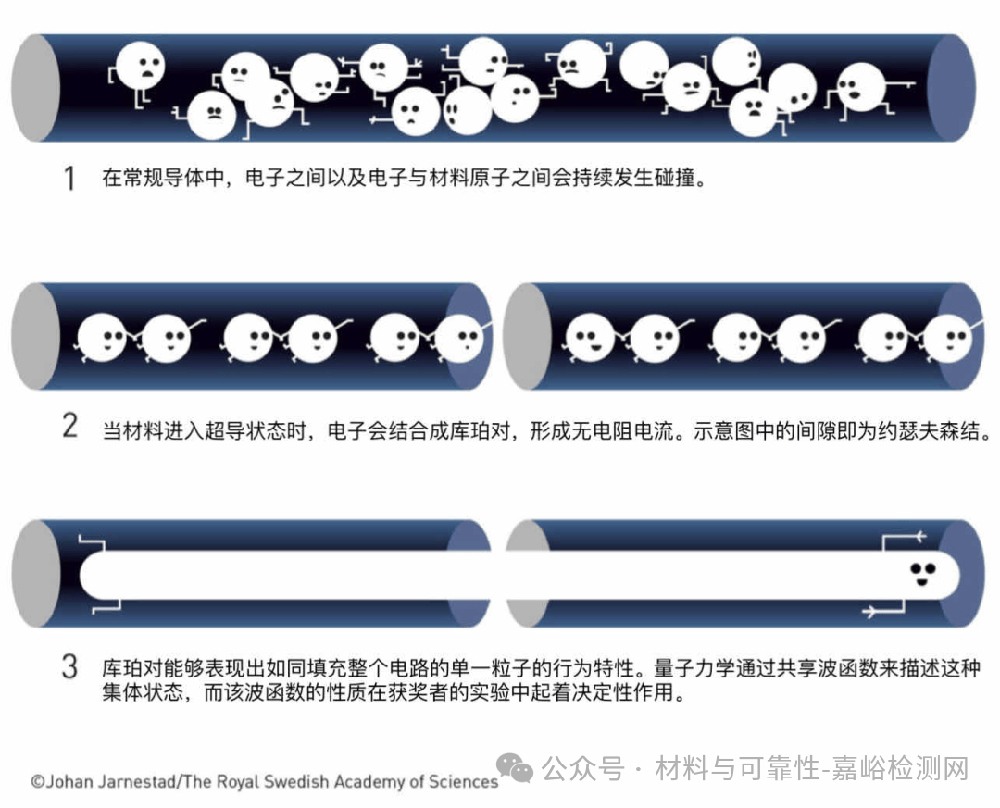
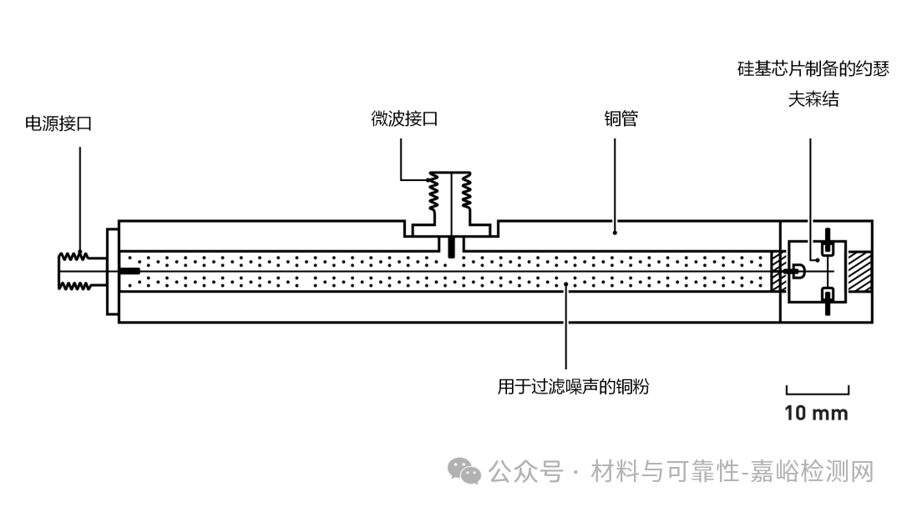
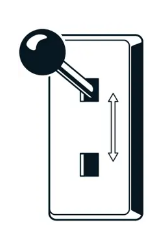

电路中的“穿墙术”：2025年诺贝尔物理学奖解读
北京时间2025年10月7日下午5:45，诺贝尔物理学奖在瑞典皇家科学院正式揭晓。2025年诺贝尔物理学奖授予约翰·克拉克 (John Clarke)、米歇尔·H·德沃雷 (Michel H. Devoret)、约翰·M·马蒂尼斯 (John M. Martinis)三人，以表彰其在量子物理学领域的开创性研究。具体来讲，是因为他们在电路中实现了宏观量子力学隧穿效应和能量量子化。

三位诺贝尔物理学奖获得者，左起依次为约翰·克拉克 (John Clarke)、米歇尔·H·德沃雷 (Michel H. Devoret)、约翰·M·马蒂尼斯 (John M. Martinis)
2025年是量子力学诞生一百周年，“量子力学”这个学科自诞生以来就因其独特的性质而备受关注，“遇事不决，量子力学”已经作为当今社会的一个“梗”而广泛传播。然而这个学科却总因其厚厚的面纱而被大多数人敬而远之。今天，就让我们一起来了解一下这门“最不科学的科学”，揭开今年诺贝尔物理学奖的神秘面纱。
量子力学的建立
与大部分人所认知的不同，“量子”（quantum）并非单独的一类粒子，它的最早含义为“能量的最小单位”。这意味着在某一尺度之下，能量不再是连续的，而是“一份一份的”，就像1和2之间不再存在1.5、1.25、1.225这样的中间值。这一开创性的概念由普朗克在1900年12月14日在柏林德国物理学会上提出，由此奠定了量子力学的概念基础。

1878年学生时代的普朗克
这一假设无疑给学界带来了极大的震撼，在这一概念提出后的24年间，爱因斯坦、德布罗意、玻色等人都在此基础上得到了进一步的发展，普朗克的能量量子假设解决了许多传统理论的遗留问题。然而量子力学的真正建立，则是在1925年。
在后来的三年间，泡利提出了泡利不相容原理，韦纳·海森堡（Werner Heisenberg）、马克斯·玻恩（Max Born）和帕斯库尔·约当（Pascual Jordan）提出了量子力学的第一个版本，矩阵力学。紧随其后，量子力学名人，埃尔文·薛定谔（Erwin Schrodinger）提出了波动力学，作为量子力学的第二种形式。在他身后，海森堡测不准原理、狄拉克方程等许多量子力学领域的著名理论纷至沓来，开启了整个量子力学时代。

第五届索尔维会议合照
微观的量子隧穿
那么，这次获奖的“量子隧穿”又是怎么回事呢？别急，让我们慢慢来看。
“量子隧穿”，又叫“势垒穿透”，描述的是一个微观粒子有概率穿透势垒的现象。很难理解？让我们来一个“中译中”：
在宏观世界中，假设你对面有一堵墙，你向那堵墙扔一个小球，那么小球理所当然地会被反弹回来。而在量子力学的世界中，这个小球就有可能会穿透这面墙到墙另一面去。

经典世界与量子世界的情况对比
听起来很耳熟？没错，正是“穿墙术”。那么，为什么会出现这样的现象呢？
前面提到，我们使用“波函数”来描述一个粒子的状态，也就是如图所示的概率波。（蓝色的点代表着粒子的质心位置，蓝色实线为实际波函数，绿色虚线为波函数实部，紫色虚线为波函数虚部，红色区域为势垒所在区域）

“高斯波包”的波形图
当我们让该波函数描述的粒子以一定速度向势垒移动时，可以看到，被势垒反射的波与原本的波叠加导致波形发生变化，这代表着这个粒子被反弹。然而，当粒子继续运行时我们会发现，在势垒的另一边也开始出现了波函数的图像，这就代表着粒子有概率穿透势垒来到势垒的另一侧。继续运行我们会发现，势垒另一侧出现了一个完整的波函数图像，这意味着这部分粒子完成了穿透，来到了势垒另一侧。

量子隧穿发生的各个阶段
从微观到宏观的飞跃
那么今年的诺贝尔物理学奖又是怎么回事呢？什么叫“宏观的量子隧穿效应”？难道人真的能学会“穿墙术”？那不怕痛的同学们可以自己试试哈（开个玩笑，注意安全）。
其实量子隧穿效应本身并不新鲜，真正新鲜的是“宏观”。过去我们针对量子力学做了非常深入的研究，但一直限制在“粒子”这一层级之内，这不禁让人好奇：宏观是否能呈现出类似的属性？
对此，约翰·克拉克的思路是：数量。就像晶体的生长一样，通过晶体的宏观几何形状，我们就可以获知其微观的分子排列，我们也可以通过大量高度一致的电子的宏观表现来“放大”其微观效应。
在低温超导体中，电子通常两两“牵手”“结伴而行”，我们称其为“库珀对”，此时整个电路中的电子共享着一个量子态。在两段超导体中间插上一片绝缘薄层（约10微米），我们称其为“约瑟夫森结”。此时在这两段超导体中间就有着一层势垒的存在。由于微观量子隧穿现象的存在，这层势垒很容易就会被穿透，因此正常情况下，整个电路中的电压应该为0，即处于“零电压状态”。

约瑟夫森结零电压状态的形成
约翰·克拉克等人设计了一个实验装置，用于向一个一厘米左右尺度的约瑟夫森结中注入电流并测量其电压变化。

约翰·克拉克等设计的实验装置
令人惊讶的是，即使存在微观量子隧穿效应，原本应该处于零电压状态的约瑟夫森结仍然时不时能测量出微小电压，这意味着这个超导电路在不需要外部输入能量翻过势垒的情况下，自动发生了状态的转变。
这样也许还是不好理解，让我们来打个比方，想象一个拉杆开关，拉杆在上时，电压表读数为0V，拉杆在下时，电压表读数为5微伏。拉杆从朝上变为朝下需要我们的手来主动掰动输入能量。如果我们不输入能量，拉杆绝对不会自己从朝上变为朝下。为了便于理解，我们想象拉杆朝上和朝下的位置中间被挡住。

刚开始，这个拉杆朝上，系统处于零电压状态
然而，随着时间的偏移，这个拉杆突然就变成了朝下的状态，使得电压表有了读数。
随着时间的偏移，拉杆自发朝下，穿过了挡板
这就意味着，这个拉杆穿墙而过，也就是发生了“隧穿”。
由于变化的是这个系统的总状态，且这个系统足够庞大，与微观的量子隧穿无关，因此此时发生的是“宏观的量子隧穿效应”。
看见“薛定谔的猫”
量子力学领域最出名的便是被誉为“物理学四大神兽”之一的“薛定谔的猫”。然而，这本质上只是一个思想实验，人类从未真正“看到”这只生死之间的猫。正如量子隧穿，我们过去一直在理论上、在数学里、在小数点后十几位的尺度上去研究，却从未真正“看到”那个隧穿的粒子。但这个实验，成功地在一个一厘米见方的电路中展现了这种过去的“不可见”，好似宇宙中的行星，只有当我们派出探测器传回照片数据的那一刻，这颗行星才真正被“看见”。这是从思维向逻辑的重大转变。
科学从来不会被什么囚笼困住，只要条件合适，你总会在不经意间发现，这些幽灵般的法则，正在默默地运行着。这三位科学家所做的不仅是一个实验，更是向人类认知边疆的一次勇敢拓展。人类正在慢慢学会倾听整个世界的交响，微观与宏观此起彼伏，却又密不可分。这场交响仍在演绎，但名为科学的音乐会，才刚刚开始。
（文章部分图片来源网络）